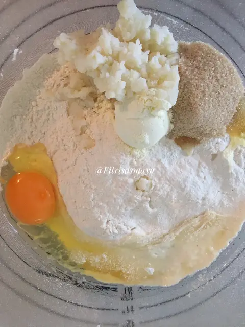
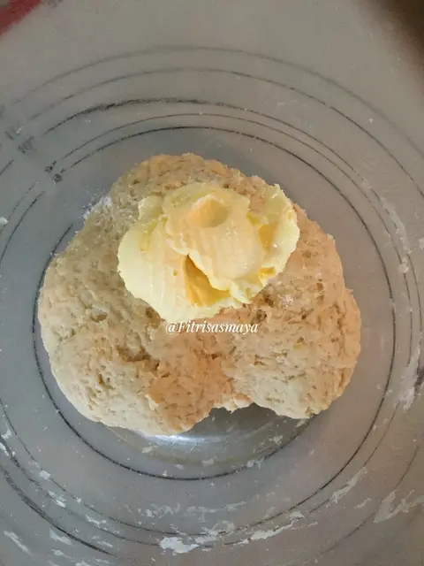
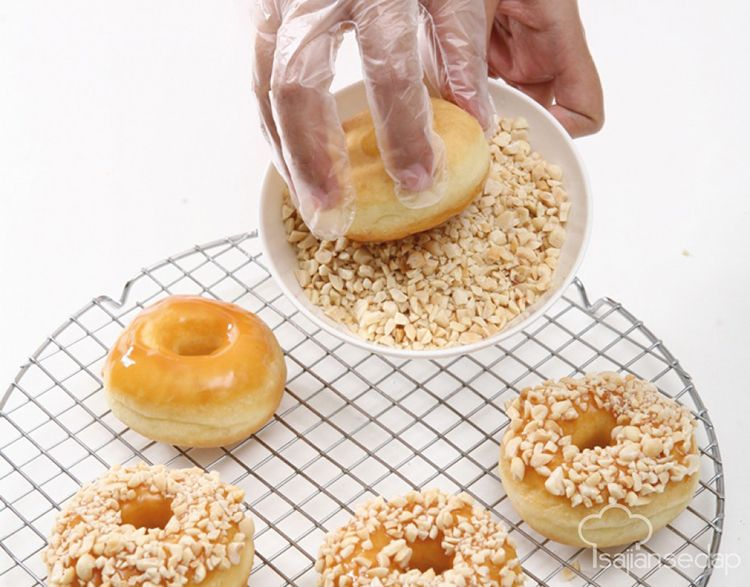

Resep Donat Kentang Mini
Bahan:
- 500 gram tepung terigu
- 225 ml air
- 60 gram gula pasir, haluskan
- 50 ml susu cair
- 3 butir kuning telur
- 100 gram kentang, kukus dan haluskan
- 30 gram margarin, cairkan
- Garam secukupnya
- Ragi secukupnya
- Baking powder, secukupnya
Bahan Topping:
- Dark chocolate compound
- White chocolate compound
- Meises (cokelat dan warna-warni)
- Kacang mede, iris kecil-kecil
Cara Membuat:
- Campur semua bahan kering mulai dari terigu, ragi, gula, dan baking powder. Aduk bahan kering hingga tercampur rata.

- Masukkan susu cair, kuning telur dan air secukupnya hingga membentuk adonan. Campur adonan hingga semuanya menyatu. Jika sudah, masukkan kentang yang telah dikukus secara pelan sambil terus diaduk.

- Selanjutnya, masukkan margarin dan garam ke dalam adonan. Uleni adonan hingga menjadi kalis. Setelah adonan dirasa sudah kalis, istirahatkan adonan selama kurang lebih 10 menit sambil ditutup dengan plastik.

- Potong dan timbang dengan berat 15 gram. Lalu bulatkan dan lubangi bagian tengah hingga membentuk donat.
- Letakkan donat ini di sebuah loyang yang telah ditaburi terigu agar tidak lengket. Diamkan kira-kira selama 1 jam hingga adonan mengembang.
- Apabila sudah mengembang, panaskan minyak dan goreng donat.
- Jika sudah matang, hias dengan toping yang telah disiapkan. Sajikan.

LAYANAN PELANGGAN